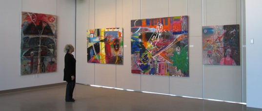
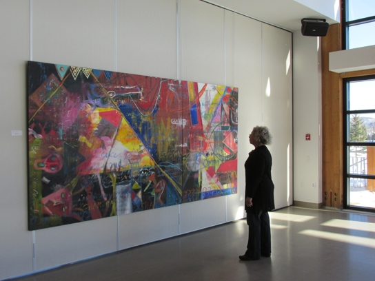
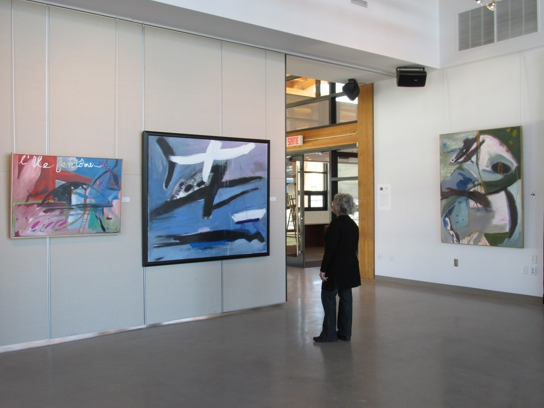

EXPOSITION
KITTIE BRUNEAU
Place des Citoyens
999 boul Ste-Adèle, Ville de Sainte-Adèle
du 10 janvier au 23 févier 2014
Salle Rousseau-Vermette et salle communautaire
RÉTROSPECTIVE


Commissaire de l'exposition Johanne Martel
Collaboration de la Galerie Quartier libre
«KITTIE BRUNEAU, PEINTRE : LA LIBERTÉ EN TOILE DE FOND
La peintre Kittie Bruneau a toujours vécu en accord avec elle-même. Et son oeuvre s’est imposée contre vents et marées. Malgré la condition des femmes artistes. Portrait d’une inclassable.
À Pointe-Saint-Pierre, le toit rouge de sa petite maison a le nez braqué sur la mer. Chaque été depuis 40 ans, Kittie Bruneau ouvre les yeux en scrutant le golfe du Saint-Laurent. Cette pointe « au bout de la terre », comme l’indique l’origine du mot « Gaspésie », est le lieu où Kittie Bruneau produit le plus.


Une oeuvre colossale et inclassable, à l’imagination débridée, souvent pleine d’humour. Traversées au cours des dernières années par un humanisme inquiet, ses toiles aux couleurs éclatantes remettent en question les déroutes de notre civilisation. Des êtres, des choses et des bêtes s’entremêlent et se superposent. Une oeuvre grouillante de vie et de poésie..»
Arianne Émond
Article paru dans la Gazette des femmes
« Kittie Bruneau fait plusieurs voyages, sac au dos, en Amérique du Sud, au Canada, sur la côte ouest américaine, en Europe et en Asie. Notamment au Népal et en Inde. Elle a dû se rendre en Inde au moins dix fois en quatorze ans ! Cette femme sereine ne pavoise jamais. Elle va son chemin depuis l’enfance et, à 70 ans, continue de mener calmement sa vie au bout de la route exigeante qu’elle a choisie : celle de l’art, de la peinture principalement et d’une vie intérieure satisfaisante. « Et vous savez, pour moi, cette sérénité passe par un désir d’un mieux-être physique. Ça n’a rien de cérébral ! »
Arianne Émond
Article paru dans la Gazette des femmes